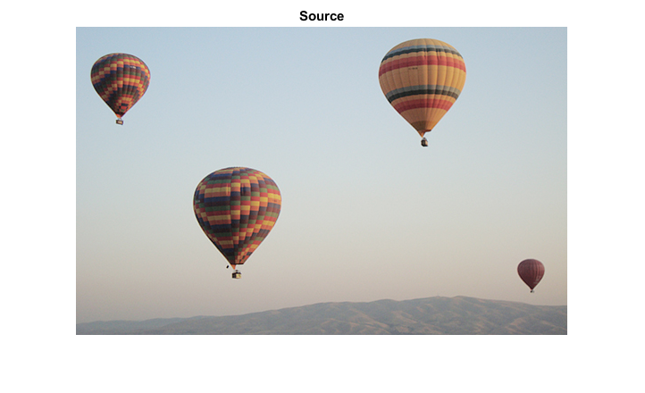
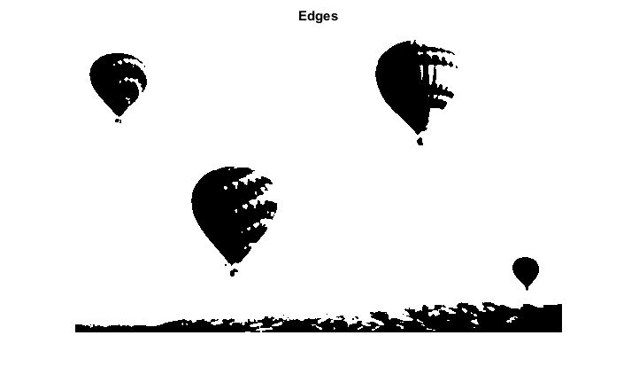
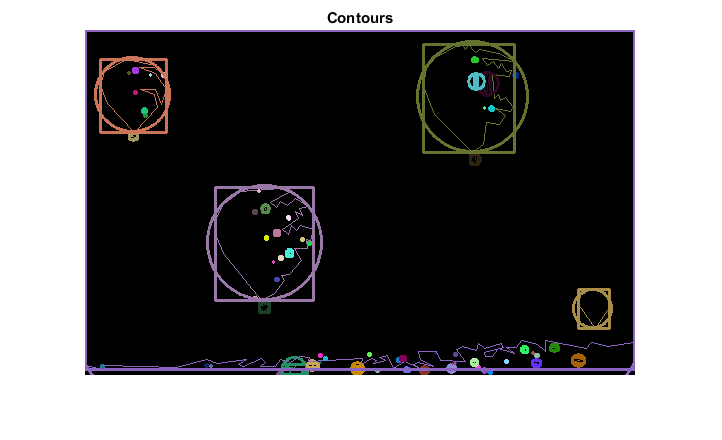

Creating Bounding boxes and circles for contours
Demo code to find contours in an image.
In this sample you will learn how to:
- use the OpenCV function cv.boundingRect
- use the OpenCV function cv.minEnclosingCircle
Sources:
Contents
Input
% Load source image src = imread(fullfile(mexopencv.root(),'test','balloon.jpg')); % Convert image to gray and blur it to get rid of the noise src_gray = cv.cvtColor(src, 'RGB2GRAY'); src_gray = cv.blur(src_gray, 'KSize',[3 3]); % Create figure imshow(src), title('Source')
Edges + Contours
% Detect edges using Threshold thresh = 134; threshold_output = cv.threshold(src_gray, thresh, ... 'MaxValue',255, 'Type','Binary'); imshow(threshold_output), title('Edges') % Find contours [contours, hierarchy] = cv.findContours(threshold_output, ... 'Mode','Tree', 'Method','Simple');
Bounding rectangles and enclosing circles
Approximate contours to polygons + get bounding rects and circles
contours_poly = cell(size(contours)); boundRect = cell(size(contours)); center = cell(size(contours)); radius = zeros(size(contours)); for i=1:numel(contours) % approximate to polygon with accuracy +/- 3 where curve must me closed contours_poly{i} = cv.approxPolyDP(contours{i}, ... 'Epsilon',3, 'Closed',true); % find a bounding rect for polygon boundRect{i} = cv.boundingRect(contours{i}); % find a minimum enclosing circle for polygon [center{i}, radius(i)] = cv.minEnclosingCircle(contours{i}); end
Draw
Draw polygonal contour + bonding rects + circles
drawing = zeros([size(threshold_output) 3], 'uint8'); for i=1:numel(contours) % pick a random color color = randi([0 255], [1 3]); % draw the contour drawing = cv.drawContours(drawing, contours_poly, ... 'ContourIdx',i-1, 'MaxLevel',0, 'Hierarchy',hierarchy, ... 'Color',color, 'Thickness',1, 'LineType',8); % draw the bounding rectangle drawing = cv.rectangle(drawing, boundRect{i}, ... 'Color',color, 'Thickness',2, 'LineType',8); % draw the minimal enclosing circle drawing = cv.circle(drawing, center{i}, radius(i), ... 'Color',color, 'Thickness',2, 'LineType',8); end % Show in a figure imshow(drawing), title('Contours')